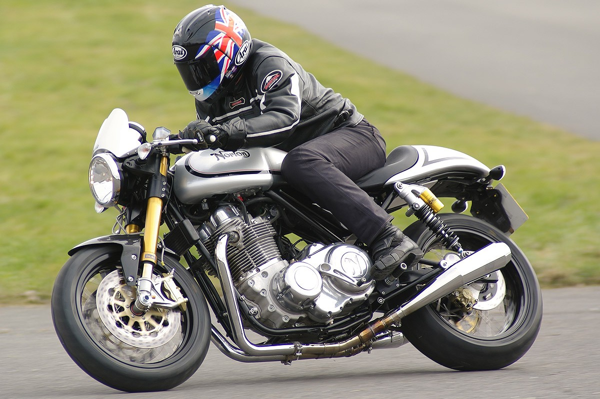

Motos Thruxton de Triumph
La Thruxton et la Thruxton R sont les café racers les plus ultimes de la gamme Modern Classics. Ces motos grisantes équipées du moteur de 1 200 cm3 spécifiquement réglé pour elles bénéficient d'une tenue de route, d'une agilité et de performances en parfait accord avec leur look Thruxton authentique pour une prestance et une puissance à la hauteur de leur nom légendaire.
Moto Triumph Thruxton
Historique
En 1969, sur le circuit de Thruxton dans le Hampshire, trois Bonneville finirent aux trois premières places des 500 miles de Thruxton. Cette victoire donna la vie à une lignée de Bonneville, les T120R, préparées pour la compétition. En 2004, Triumph présente la 900 Thruxton. Elle dépoussière également un style cher aux amateurs d'anglaises, les Café racer. Esthétiquement, elle est très dépouillée. Le chrome est présent, sur les carters, le phare, jusqu'à la coque arrière. Un drapeau à damier court le long du réservoir et du dosseret de selle des modèles 2004 à 2006, remplacé par trois bandes blanches en 2007. Bien que la position de conduite soit plutôt typée sport avec des guidons bracelet et des commandes reculées, elle s'avère assez confortable. Les deux échappements mégaphones chromés donnent un son grave au moteur. La Thruxton utilise un moteur de 800 Bonneville réalésé à 90 mm. Il en résulte une cylindrée de 865 cm³ pour 70 chevaux. Il utilise des arbres à cames et des carburateurs différents. La partie cycle se compose d'un cadre double berceau. La suspension arrière fait appel à deux combinés. Le freinage est assuré à l'avant par un simple disque de 320 mm de diamètre pincé par un étrier Nissin à deux pistons, et, à l'arrière, par un simple disque de 255 mm de diamètre pincé également par un étrier Nissin à deux pistons. Le préparateur français Mécatwin propose, en 2005, en partenariat avec l'importateur Triumph, un kit appelé « Pack Thruxton », comprenant un guidon plat, un rabaissement de la machine de 30 mm, de tés de fourche et pontets de guidon Mécatwin, de rétroviseurs différents. Ce kit est vendu chez les concessionnaires Triumph et la machine équipée avec coûte le même pix qu'une Thruxton standard1. En 2008, la Thruxton adopte l'alimentation par injection électronique. Afin de ne pas dénaturer l'esthétique générale néo-rétro, le corps des injecteurs est camouflé dans un simili-carburateur. Les bandes qui courent le long de la carrosserie sont désormais de couleur. Les rétroviseurs sont fixés au bout des guidons et celui-ci est réhaussé. En l'hommage du Ace Café de Brighton en 2015, Triumph sort une édition spéciale la "Thruxton Ace". Le logo du Ace Café est apposé sur un réservoir blanc à bande de damier, les flancs noir et la coque de selle. Cette édition a également le droit à sa propre selle Oxblood et ses rétroviseurs en bout de guidons. Chaque moto est authentifiée par une plaque sur le guidon.
| Années | Pilotes | Circuits | Motorcyclette | Résultats |
|---|---|---|---|---|
| 1965 | Dave Degens, Barry Lawton | Castle Combe | 650 Triumph | 79.18 mph |
| 1966 | Dave Degens, Rex Butcher | Brands Hatch | 650 Triumph | 79.10 mph |
| 1967 | Percy Tait, Rod Gould | Brands Hatch | 649 Triumph | 79.15 mph |
| 1968 | Dave Nixon, Peter Butler | Brands Hatch | 490 Triumph | 75.52 mph |
Motos Norton
Si vous doutiez du retour aux affaires de Norton, alors cet essai a de quoi vous rassurer. Car voici la première Commando 961 de présérie, construite dans l’usine dédiée près du circuit de Donington Park, en Grande-Bretagne. Nous l’avons essayée et photographiée sous tous les angles.
Il y a deux ans, Stuart Garner – magnat de l’industrie de la pyrotechnie qui venait de racheter la marque Norton – évoquait, dans un entretien, la possibilité de faire courir une version réactualisée de la F1 à moteur rotatif. Dès lors, Garner se dépêche de ressusciter Norton, érigeant une usine de 2 000 m2 à Donington en Grande-Bretagne, et recrutant une équipe de cadres dirigeants et d’ingénieurs (dont une bonne partie provenant de l’usine Triumph toute proche, ce sur quoi Garner insiste pour dire que chacun d’entre eux l’aurait d’abord approché, et non qu’il tente d’écrémer les rangs des hommes de main de John Bloor !). Et ce, afin de relancer, 18 ans plus tard, le développement pour le grand public d’une Norton – la première à moteur non rotatif depuis 23 ans. Se basant sur les trois prototypes made in USA qu’il hérite de Kenny Dreer lors du rachat, Garner s’est donné un an pour concevoir et fabriquer le modèle de la renaissance, le roadster néo-rétro Commando 961, dont une édition spéciale (SE) est entrée en production au mois d’avril dernier, au prix de 15 999 livres sterling et sera disponible en France à 18 590 € auprès de Paradise Moto (voir article ici). Si vous êtes intéressé par une de ces anglaises mais que vous trouvez la facture trop salée, pas d’inquiétude : Norton a également sous la main deux variantes plus économiques, qui seront disponibles en France d’ici la fin de l’année : le modèle basique Sport, moins « bling-bling » que la SE, vendu 14 990 € et le Café Racer avec ses guidons bracelets évocateurs essayé ici et vendu 16 790 €.
Des modèles de moto Café Racer:
- Harley-Davidson 1000 XLCR Cafe Racer
- Triumph Thruxton
- Voxan Cafe Racer
Informations diverses:
- Votre premier Café Racer ?
- Qu’est-ce qu’un Café Racer ?
- La base idéale pour le garage « BCKustoms” à moins de 1500€ :
- Pour un Café Racer :
- Pour un Tracker :
- La base idéale pour le garage « Bullita Motorcycle » à moins de 1500€ :